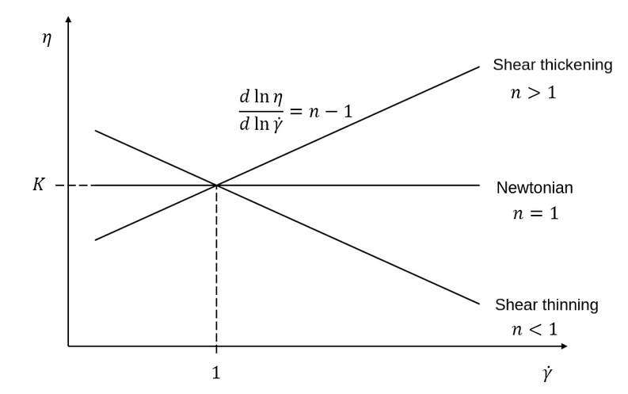
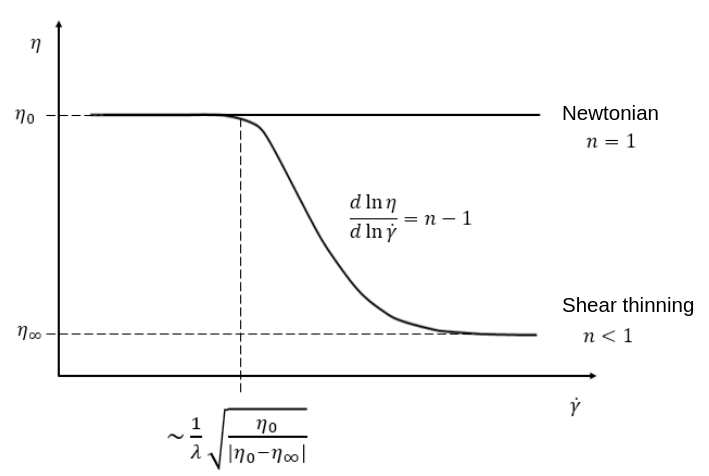

Physical Properties#
Note
Lethe supports single phase, two phase (using VOF) and conjugate simulations. This is managed using the fluid and solid subsections.
subsection physical properties
set number of fluids = 1
set reference temperature = 0
subsection fluid 0
# Rheology
set rheological model = newtonian
set kinematic viscosity = 1
# Density
set density model = constant
set density = 1
# Specific heat
set specific heat model = constant
set specific heat = 1
# Thermal conductivity
set thermal conductivity model = constant
set thermal conductivity = 1
# Thermal expansion
set thermal expansion model = constant
set thermal expansion = 0
# Tracer diffusivity
set tracer diffusivity model = constant
set tracer diffusivity = 0
# Tracer reaction
set tracer reaction constant model = none
set tracer reaction constant = 0
set tracer reaction order = 1
end
set number of solids = 0
set number of material interactions = 1 #by default it is set to 0
subsection material interaction 0
set type = fluid-fluid
subsection fluid-fluid interaction
set first fluid id = 0
set second fluid id = 1
# Surface tension
set surface tension model = constant
set surface tension coefficient = 0
set reference state temperature = 0
set temperature-driven surface tension gradient = 0
set liquidus temperature = 0
set solidus temperature = 0
# Mobility Cahn-Hilliard
set cahn hilliard mobility model = constant
set cahn hilliard mobility constant = 1e-7
end
# if fluid-solid interaction
subsection fluid-solid interaction
set fluid id = 0
set solid id = 0
# Surface tension
set surface tension model = constant
set surface tension coefficient = 0
set reference state temperature = 0
set temperature-driven surface tension gradient = 0
set liquidus temperature = 0
set solidus temperature = 0
end
end
end
The
number of fluidsparameter controls the number of fluids in the simulation. This parameter is set to1except in Two Phase Simulations .The
reference temperatureparameter specifies the reference temperature used in the calculation of some physical properties or the thermal expansion force.The
rheological modelparameter sets the choice of rheological model. The choices are betweennewtonian,power-law,carreauandphase_change. For more details on the rheological models, see Rheological Models .The
kinematic viscosityparameter is the kinematic viscosity of the newtonian fluid in units of \(\text{Length}^{2} \cdot \text{Time}^{-1}\). In SI, this is \(\text{m}^{2} \cdot \text{s}^{-1}\). This viscosity is only used whenrheological model = newtonian.The
density modelspecifies the model used to calculate the density. At the moment, aconstantdensity and anisothermal_ideal_gasmodel are supported. For more details on the density models, see Density Models.The
densityparameter is the constant density of the fluid in units of \(\text{Mass} \cdot \text{Length}^{-3}\)The
specific heat modelspecifies the model used to calculate the specific heat. At the moment, only a constant specific heat is supported.The
specific heatparameter is the constant specific heat of the fluid in units of \(\text{Energy} \cdot \text{Temperature}^{-1} \cdot \text{Mass}^{-1}\) .The
thermal conductivity modelspecifies the model used to calculate the thermal conductivity. At the moment,constantandlinearthermal conductivity are available. For more details on the thermal conductivity models, see Thermal Conductivity Models.The
thermal conductivityparameter is the thermal conductivity coefficient of the fluid with units of \(\text{Power} \cdot \text{Temperature}^{-1} \cdot \text{Length}^{-1}\).The
thermal expansion modelspecifies the model used to calculate the thermal expansion coefficient. At the moment,constantandphase_changethermal expansion are supported. For more details on the thermal expansion models, see Thermal Expansion Models.The
thermal expansionparameter is the thermal expansion coefficient of the fluid with dimension of \(\text{Temperature}^{-1}\). It is used to define the buoyancy-driven flow (natural convection) using the Boussinesq approximation, which leads to the definition of the following source term that is added to the Navier-Stokes equation:\[{\bf{F_{B}}} = -\beta {\bf{g}} (T-T_\text{ref})\]where \(F_B\) denotes the buoyant force source term, \(\beta\) is the thermal expansion coefficient, \(T\) is temperature, and \(T_\text{ref}\) is the reference temperature. This is only used when a constant thermal expansion model is used.
The
tracer diffusivity modelspecifies the model used to calculate the tracer diffusivity. At the moment, a constant tracer diffusivity, a level set based \(\tanh\) model and a Gaussian level set based models are supported. Theimmersed solid tanhandimmersed solid gaussianmodels are intended to be used with immersed solids with thelethe-fluid-sharpexecutable as a way to set diffusivity inside solids as well (described more in Immersed Solid Models).The
tracer diffusivityparameter is the diffusivity coefficient of the tracer in units of \(\text{Length}^{2} \cdot \text{Time}^{-1}\) . In SI, this is \(\text{m}^{2} \cdot \text{s}^{-1}\).The
tracer reaction constant modelspecifies the model used to calculate the tracer reaction constant \(\alpha\). At the moment, a constant tracer reaction constant, a level set based \(\tanh\) model and a Gaussian level set based models are supported, as well as no reaction. The alternatives are therefore <none,constant,immersed solid tanh,immersed solid gaussian>. Theimmersed solid tanhandimmersed solid gaussianmodels are intended to be used with immersed solids with thelethe-fluid-sharpexecutable as a way to set reaction constant inside solids as well (described more in Immersed Solid Models). At the moment, only power law reaction consumption rates (\(-R\)) are implemented:\[S = - R = - (\alpha C^{(n-1)}) C\]The
tracer reaction constantparameter (\(\alpha\)) is the reaction constant coefficient of the tracer in units of \(\text{Concentration}^{1-\text{order}}\text{Time}^{-\text{order}}\) . In SI, this is \((\text{m}^{\text{dim}}\text{g}^{-1})^{1-\text{order}} \text{s}^{-\text{order}}\).The
tracer reaction orderparameter (\(n\)) is the reaction order of the tracer.The
number of solidsparameter controls the number of solid regions. Solid regions are currently only implemented for Conjugate Heat Transfer.The
number of material interactionsparameter controls the number of physical properties that are due to the interaction between two materials. At the moment, only the surface tension between two fluids is implemented in Two Phase Simulations.The material interaction
typecan either befluid-fluid(default) orfluid-solid.In the
fluid-fluidsubsection we define the pair of fluids and their physical properties.The
first fluid idis the id of the first fluid.The
second fluid idis the id of the second fluid.Attention
The
second fluid idshould be greater than thefirst fluid id.The
surface tension modelspecifies the model used to calculate the surface tension coefficient of the fluid-fluid pair. At the moment,constant,linear, andphase_changemodels are supported. For more details on the surface tension models, see Surface Tension Models.The
surface tension coefficientparameter is a constant surface tension coefficient of the two interacting fluids in units of \(\text{Mass} \cdot \text{Time}^{-2}\). In SI, this is \(\text{N} \cdot \text{m}^{-1}\). The surface tension coefficient is used as defined in the Weber number (\(We\)):\[We = Re \cdot \frac{\mu_\text{ref} \; u_\text{ref}}{\sigma}\]where \(Re\) is the Reynolds number, \(\mu_\text{ref}\) and \(u_\text{ref}\) are some reference viscosity and velocity characterizing the flow problem, and \(\sigma\) is the surface tension coefficient.
The
reference state temperatureparameter is the temperature of the reference state at which thesurface tension coefficientis evaluated. This parameter is used in the calculation of the surface tension using thelinearsurface tension model (see Surface Tension Models).The
temperature-driven surface tension gradientparameter is the surface tension gradient with respect to the temperature of the two interacting fluids in units of \(\text{Mass} \cdot \text{Time}^{-2} \cdot \text{Temperature}^{-1}\). In SI, this is \(\text{N} \cdot \text{m}^{-1} \cdot \text{K}^{-1}\). This parameter is used in the calculation of the surface tension using thelinearsurface tension model (see Surface Tension Models).The
solidus temperatureandliquidus temperatureparameters are used in the calculation of the surface tension using thephase_changesurface tension model (see Surface Tension Models).The
cahn hilliard mobility modelspecifies the model used to calculate the mobility used in the Cahn-Hilliard equations for the pair of fluid. Two models are available: aconstantmobility and aquarticmobility. The reader is refered to Cahn-Hilliard for more details.The
cahn hilliard mobility coefficientparameter is the constant mobility coefficient of the two interacting fluids used in the Cahn-Hilliard equations. Its units are \(\text{Length}^{2} \cdot \text{Time}^{-1}\).
In the
fluid-solidsubsection we define the fluid-solid pair and their physical properties.The
fluid idis the id of the fluid.The
solid idis the id of the solid.The
surface tension modelandsurface tension coefficientare the same as described in thefluid-fluidsubsection above.
Note
The default values for all physical properties models in Lethe is constant. Consequently, it is not necessary (and not recommended) to specify the physical property model unless this model is not constant. This generates parameter files that are easier to read.
Material Physical Property Models#
Two Phase Simulations#
Note
Two phase simulations require that either set VOF = true or set cahn hilliard = true in the Multiphysics subsection. By convention, air is usually the fluid 0 and the other fluid of interest is the fluid 1.
For two phases, the properties are defined for each fluid. Default values are:
subsection physical properties
set number of fluids = 2
subsection fluid 0
set density = 1
set kinematic viscosity = 1
set specific heat = 1
set thermal conductivity = 1
set tracer diffusivity = 0
end
subsection fluid 1
set density = 1
set kinematic viscosity = 1
set specific heat = 1
set thermal conductivity = 1
set tracer diffusivity = 0
end
end
number of fluids = 2is required for a free surface simulation, otherwise an error will be thrown in the terminal.subsection fluid 0indicates the properties of fluid where the phase indicator = 0 (Volume of Fluid method), as defined when initializing the free surface (see the Initial Conditions subsection), and correspondinglyfluid 1is located where the phase indicator = 1.
Warning
Lethe now supports the use of physical properties models that are different for both phases. For example, the liquid could have a carreau rheological model and the air could have a newtonian rheological model. However, this feature has not been fully tested and could lead to unpredictable results. Use with caution.
Conjugate Heat Transfer#
Conjugate heat transfer enables the addition of solid regions in which the fluid dynamics is not solved for. To enable the presence of a solid region, number of solids must be set to 1. By default, the region with the material_id=0 will be the fluid region whereas the region with material_id=1 will be the solid region. The physical properties of the solid region are set in an identical fashion as those of the fluid.
Warning
This is an experimental feature. It has not been tested on a large range of application cases.
subsection physical properties
set number of fluids = 1
subsection fluid 0
...
end
set number of solids = 1
subsection solid 0
# Density
set density model = constant
set density = 1
# Specific heat
set specific heat model = constant
set specific heat = 1
# Thermal conductivity
set thermal conductivity model = constant
set thermal conductivity = 1
end
end
Immersed Solid Models#
Immersed solid models can be used to affect specific behavior to immersed solids when lethe-fluid-sharp is used. At the moment, such a model is only available for the tracer multiphysics, but additional physics will be included in the future.
The immersed solid properties models are based on the signed distance function of the immersed solids, and therefore depend on the depth inside the solid. The intent behind these models is to define physical properties in the fluid and solid phases as well as in the transition regions.
The tracer diffusivity model and tracer reaction constant model parameters set which models are used. The default models are constant, which use constant tracer diffusivity and tracer reaction constant.
The equation of the immersed solid tanh model is defined as follows. \(D\) is the tracer property (outside and inside), \(\lambda\) is the signed distance and \(\sigma\) the thickness of the transition zone between both property values:
The equation of the immersed solid gaussian model is defined as follows. \(D\) is the tracer property (interface and bulk), \(\lambda\) is the signed distance and \(\sigma\) the thickness (standard deviation) of the Gaussian function:
subsection physical properties
set number of fluids = 1
subsection fluid 0
set kinematic viscosity = 0.01
set tracer diffusivity model = immersed solid tanh # or immersed solid gaussian
set tracer reaction order = 1
subsection immersed solid tanh
set tracer diffusivity inside = 1
set tracer diffusivity outside = 1
set tracer reaction constant inside = 0
set tracer reaction constant outside = 0
set thickness = 1
end
subsection immersed solid gaussian
set tracer diffusivity interface = 0
set tracer diffusivity bulk = 1
set tracer reaction constant interface = 0
set tracer reaction constant bulk = 0
set thickness = 1
end
end
end
The
tracer diffusivity insideandtracer diffusivity outsideparameters are the desired diffusivities inside and outside of the solid.The
tracer reaction constant insideandtracer reaction constant outsideparameters are the desired reaction constants inside and outside of the solid.The
tracer diffusivity interfaceandtracer diffusivity bulkparameters are the desired diffusivities at the fluid-solid interface of the immersed solid and in the bulk of each phase, respectively. It can be used to allow diffusion in each phase while blocking interphase exchange, for example.The
tracer reaction constant interfaceandtracer reaction constant bulkparameters are the desired reaction constants at the fluid-solid interface of the immersed solid and in the bulk of each phase, respectively. It can be used to enable localized reaction, for example when active catalytic sites are only at the surface of a solid.The
thicknessparameters inimmersed solid tanhandimmersed solid gaussiansubsections represent the thickness of the applied models. They can be different.
Rheological Models#
Two families of rheological models are supported in Lethe. The first one are generalized non Newtonian rheologies (for shear thinning and shear thickening flows). In these models, the viscosity depends on the shear rate. The second family of rheological models possess a viscosity that is independent of the shear rate, but that may depend on other fields such as the temperature.
The rheological model parameter sets which rheological model you are using. The default rheological model is newtonian, which uses a constant kinematic viscosity.
subsection physical properties
set number of fluids = 1
subsection fluid 0
set rheological model = newtonian
set kinematic viscosity = 1.0
end
end
- The rheological model available options are:
newtonianpower-lawcarreauphase_change
Power-Law Model#
The power-law model is the simplest rheological model, using only 2 parameters
where \(\eta\) is the kinematic viscosity and \(\dot{\gamma}\) is the local shear rate magnitude.
{kind=link}
When using the power-law model, the default values are:
subsection physical properties
set number of fluids = 1
subsection fluid 0
set rheological model = power-law
subsection non newtonian
subsection power-law
set K = 1.0
set n = 0.5
set shear rate min = 1e-3
end
end
end
end
The
Kparameter is a fluid consistency index. It represents the fluid viscosity for a local shear rate of \(1.0\).The
nparameter is the flow behavior index. It sets the slope in the log-log \(\eta = f(\dot{\gamma})\) graph.The
shear rate minparameter yields the magnitude of the shear rate tensor for which the viscosity is calculated. Since the model uses a power operation, a null shear rate magnitude leads to an invalid viscosity. To ensure numerical stability, the shear rate cannot go below this threshold when the viscosity calculated.
Carreau Model#
The Carreau model is in reality the five parameter Carreau model:
where \(\eta\) is the kinematic viscosity and \(\dot{\gamma}\) is the shear rate.
{kind=link}
The parameters for the Carreau model are defined by the carreau subsection. The default values are:
subsection physical properties
set number of fluids = 1
subsection fluid 0
set rheological model = carreau
subsection non newtonian
subsection carreau
set viscosity_0 = 1.0
set viscosity_inf = 1.0
set a = 2.0
set lambda = 1.0
set n = 0.5
end
end
end
end
The
viscosity_0parameter represents the viscosity when the shear rate on the fluid tends to 0.The
viscosity_infparameter represents the viscosity when the shear rate on the fluid becomes large.The
ais the Carreau parameter, generally set to 2.The
lambdais the relaxation time associated to the fluid.The
nis a power parameter. It sets the slope in the log-log \(\eta = f(\dot{\gamma})\) graph just like in the power-law model.
Note
The Carreau model is only suitable for Newtonian and shear-thinning flows.
Phase-Change Model#
The phase change model is a simple rheological model in which the viscosity depends on the temperature. This model is used to model melting and freezing of components. The kinematic viscosity \(\nu\) is given by :
where \(T_\text{l}\) and \(T_\text{s}\) are the liquidus and solidus temperature. The underlying hypothesis of this model is that the melting and the solidification occur over a phase change interval. Melting will occur between \(T_\text{s}\) and \(T_\text{l}\) and solidification will occur between \(T_\text{l}\) and \(T_\text{s}\).
This model is parameterized using the phase change subsection
subsection phase change
# Temperature of the liquidus
set liquidus temperature = 1
# Temperature of the solidus
set solidus temperature = 0
# Viscosity of the liquid phase
set viscosity liquid = 1
# Viscosity of the solid phase
set viscosity solid = 1
end
The
liquidus temperatureis \(T_\text{l}\)The
solidus temperatureis \(T_\text{s}\)The
viscosity liquidis \(\nu_\text{l}\)The
viscosity solidis \(\nu_\text{s}\)
Note
The phase change subsection is used to parametrize both rheological model = phase_change and specific heat model = phase_change. This prevents parameter duplication.
Density Models#
Lethe supports both constant and isothermal_ideal_gas density models. Constant density assumes a constant density value. Isothermal ideal gas density assumes that the fluid’s density varies according the following state equation:
where \(\rho_\text{ref}\) is the density of the fluid at the reference state, \(\psi = \frac{1}{R T}\) is the compressibility factor derived from the ideal gas law with \(R= \frac{R_u}{M}\) the specific gas constant (universal gas constant (\(R_u\)) divided by the molar mass of the gas (\(M\))) and \(T\) the temperature of the gas, finally, \(p\) is the differential pressure between the reference state and the current state. This model is used for weakly compressible flows when temperature fluctuations’ influence on density can be neglected.
This model is parametrized using the isothermal_ideal_gas subsection:
subsection physical properties
set number of fluids = 1
subsection fluid 0
set density model = isothermal_ideal_gas
subsection isothermal_ideal_gas
set density_ref = 1.2
set R = 287.05
set T = 293.15
end
end
end
where:
density_refcorresponds to \(\rho_\text{ref}\)Rcorresponds to \(R\)Tcorresponds to \(T\)
By default, parameters are set to the values of dry air evaluated under normal temperature and pressure conditions \((20 \ \text{°C}\), \(1 \ \text{atm})\).
Caution
When defining the initial pressure condition in the initial conditions subsection (see Initial Conditions), make sure to set it to \(0\), as it represents the reference state for the calculated pressure. In solving the Navier-Stokes equations, the pressure is defined to within a constant. Therefore, it is more appropriate to interpret it as a differential pressure.
Thermal Conductivity Models#
Constant, linear and phase_change thermal conductivities are supported in Lethe. Constant thermal conductivity assumes a constant value of the thermal conductivity. Linear thermal conductivity assumes that that the thermal conductivity \(k\) varies linearly with the temperature, taking the following form:
where \(k_{A,0}\) and \(k_{A,1}\) are constants and \(T\) is the temperature. This enables a linear variation of the thermal conductivity as a function of the temperature.
In the phase_change thermal conductivity model, two different values (thermal conductivity liquid, and thermal conductivity solid) are required for calculating the thermal conductivities of the liquid and solid phases, respectively. For the liquid phase (\(T>T_\text{liquidus}\)), the thermal conductivity liquid is applied, while for the solid phase (\(T<T_\text{solidus}\)), the model uses the thermal conductivity solid. In the mushy zone between \(T_\text{solidus}\) and \(T_\text{liquidus}\), the thermal conductivity is equal to:
where \(k_\text{l}\), \(k_\text{s}\) and \(\alpha_\text{l}\) denote thermal conductivities of the liquid and solid phases and the liquid fraction.
This model is parameterized using the following section:
subsection phase change
# Temperature of the liquidus
set liquidus temperature = 1
# Temperature of the solidus
set solidus temperature = 0
# Thermal conductivity of the liquid phase
set thermal conductivity liquid = 1
# Thermal conductivity of the solid phase
set thermal conductivity solid = 1
end
The
liquidus temperatureis \(T_\text{l}\)The
solidus temperatureis \(T_\text{s}\)The
thermal conductivity liquidis \(k_\text{l}\)The
thermal conductivity solidis \(k_\text{s}\)
Specific Heat Models#
Lethe supports two types of specific heat models. Setting specific heat=constant sets a constant specific heat. Lethe also supports a phase_change specific heat model. This model can simulate the melting and solidification of a material. The model follows the work of Blais & Ilinca [1]. This approach defines the specific heat \(C_\text{p}\) as:
where \(T\) is the temperature, \(T_0\) is the temperature at the previous time and \(H(T)\) is the enthalpy, as a function of the temperature, to be:
where \(H_0\) is a reference enthalpy, taken to be 0, and \(c^{*}_\text{p}\) is:
where \(C_\text{p,s}\) and \(C_\text{p,l}\) are the solid and liquid specific heat, respectively. \(h_\text{l}\) is the latent enthalpy (enthalpy related to the phase change), \(T_\text{l}\) and \(T_\text{s}\) are the liquidus and solidus temperature. The underlying hypothesis of this model is that the melting and the solidification occurs over a phase change interval. Melting will occur between \(T_\text{s}\) and \(T_\text{l}\) and solidification will occur between \(T_\text{l}\) and \(T_\text{s}\).
This model is parameterized using the following section:
subsection phase change
# Enthalpy of the phase change
set latent enthalpy = 1
# Temperature of the liquidus
set liquidus temperature = 1
# Temperature of the solidus
set solidus temperature = 0
# Specific heat of the liquid phase
set specific heat liquid = 1
# Specific heat of the solid phase
set specific heat solid = 1
end
The
latent enthalpyis the latent enthalpy of the phase change: \(h_\text{l}\)The
liquidus temperatureis \(T_\text{l}\)The
solidus temperatureis \(T_\text{s}\)The
specific heat liquidis \(C_\text{p,l}\)The
specific heat solidis \(C_\text{p,s}\)
Thermal Expansion Models#
Lethe supports two types of thermal expansion heat models. Setting thermal expansion model=constant sets a constant thermal expansion. Lethe also supports a phase_change thermal expansion model. This model can simulate the melting and solidification of a material with natural convection. It works by defining a different value of the thermal expansion coefficient depending on the value of the temperature:
This model is parameterized using the following section:
subsection phase change
# Temperature of the liquidus
set liquidus temperature = 1
# Temperature of the solidus
set solidus temperature = 0
# Thermal expansion of the liquid phase
set thermal expansion liquid = 1
# Thermal expansion of the solid phase
set thermal expansion solid = 0
end
The
liquidus temperatureis \(T_\text{l}\)The
solidus temperatureis \(T_\text{s}\)The
thermal expansion liquidis \(\beta_\text{l}\)The
thermal expansion solidis \(\beta_\text{s}\)
Phase Change#
The current section recapitulates the phase change subsection.
Snippets of this subsection can be found across the different physical property models’ descriptions.
subsection phase change
set liquidus temperature = 1
set solidus temperature = 0
# Rheology
set viscosity liquid = 1
set viscosity solid = 1
# Specific heat
set latent enthalpy = 1
set specific heat liquid = 1
set specific heat solid = 1
# Thermal conductivity
set thermal conductivity liquid = 1
set thermal conductivity solid = 1
# Thermal expansion
set thermal expansion liquid = 1
set thermal expansion solid = 0
# Darcy penalization
set Darcy penalty liquid = 0
set Darcy penalty solid = 0
end
The phase change is modelled with the underlying hypothesis that melting and solidification occur over a phase change interval. Melting occurs between \(T_\text{s}\) and \(T_\text{l}\), respectively the solidus temperature and the liquidus temperature. Analogously, solidification occurs between \(T_\text{l}\) and \(T_\text{s}\).
Rheology (see rheological phase change model):
viscosity liquid: kinematic viscosity of the liquid phase \((\nu_\text{l})\)viscosity solid: kinematic viscosity of the solid phase \((\nu_\text{s})\)
Specific heat (see specific heat phase change model):
latent enthalpy: latent enthalpy of the phase change \((h_\text{l})\)specific heat liquid: specific heat of the liquid phase \((C_\text{p,l})\)specific heat solid: specific heat of the solid phase \((C_\text{p,s})\)
Thermal conductivity (see thermal conductivity phase change model):
thermal conductivity liquid: thermal conductivity of the liquid phase \((k_\text{l})\)thermal conductivity solid: thermal conductivity of the solid phase \((k_\text{s})\)
Thermal expansion (see thermal expansion phase change model):
thermal expansion liquid: thermal expansion of the liquid phase \((\beta_\text{l})\)thermal expansion solid: thermal expansion of the solid phase \((\beta_\text{s})\)
Darcy penalization (see Darcy penalization):
Darcy penalty liquid: Darcy penalty coefficient for the liquid phaseDarcy penalty solid: Darcy penalty coefficient for the solid phase
Interface Physical Property Models#
Surface Tension Models#
Lethe supports three types of surface tension models: constant, linear, and phase_change. A constant surface tension model assumes a constant value of surface tension, while a linear surface tension assumes that the surface tension evolves linearly with the temperature:
where \(\sigma_0\) is the surface tension coefficient evaluated at reference state temperature \(T_0\) and \(\frac{d\sigma}{dT}\) is the surface tension gradient with respect to the temperature \(T\).
For problems treating solid-liquid phase change, the phase_change model is intended to apply the surface tension force only when the fluid is liquid such that:
where \(T_\mathrm{s}\) and \(T_\mathrm{l}\) correspond to the solidus temperature and liquidus temperature defined in the material interaction subsection, and \(\alpha_{\mathrm{l}}\) is the liquid fraction. The latter is defined as:
Warning
In Lethe, the linear and phase_change surface tension models are only used to account for the thermocapillary effect known as the Marangoni effect. Therefore, to enable the Marangoni effect, the surface tension model must be set to linear or phase_change and a surface tension gradient different from zero \((\frac{d\sigma}{dT} \neq 0)\) must be specified.
Cahn-Hilliard Mobility Models#
Lethe supports two types of mobility models for the Cahn-Hilliard equations. Setting cahn hilliard mobility model = constant sets a constant mobility. Setting a cahn hilliard mobility model = quartic sets a quartic model for mobility:
with \(D\) the value set for cahn hilliard mobility constant. A quartic mobility is required to recover a correct velocity according to Bretin et al. [2] Therefore, it is preferable to use it when solving the coupled Cahn-Hilliard and Navier-Stokes equations. A good rule of thumb for setting the mobility constant is to have it proportionnal to the square of the minimum cell size. This rule may depend on the duration of the simulation, so a finer tuning may be necessary.
References#
[1] B. Blais and F. Ilinca, “Development and validation of a stabilized immersed boundary CFD model for freezing and melting with natural convection,” Comput. Fluids, vol. 172, pp. 564–581, Aug. 2018, doi: 10.1016/j.compfluid.2018.03.037.
[2] E. Bretin, R. Denis, S. Masnou, A. Sengers, and G. Terii, “A multiphase Cahn-Hilliard system with mobilities and the numerical simulation of dewetting.” arXiv, Apr. 18, 2023. doi: 10.48550/arXiv.2105.09627.